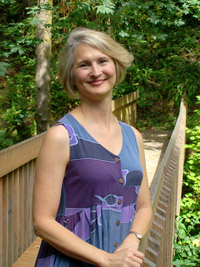

About Janelle
Gratitude describes how I feel about this work and my healing practice. It has been a process to discover my true vocation. I am a nurse and a healer, I've been a caregiver in many forms for 25 years, I became a registered nurse and have worked in hospitals and nursing homes for 15 years.
Before becoming a massage therapist, I sought bodywork for chronic pain and discovered how well massage, CST and LDT work. This experience has given me the insight and empathy to address these issues in others.
With CST training I learned about the effect that restrictions have on the body. When there are restrictions in our tissues, the body has to work harder to achieve balance or homeostasis. Lymph Drainage Therapy is a greatly needed healing modality focusing on the stress that inflammation and swelling causes the body which triggers lists of disease states.
Whether the restriction is in the muscles, craniosacral system, or lymph system, I have the the training to go lightly to that level and support your body to release the restriction.
I am listed in the International Association of HealthCare Practitioners at http://www.iahp.com/pages/search/.